SOCKS Proxy: Freedom and Security
Joshua Embrey
Group51.org
Introduction
My Name
Credentials
Lead to Purpose
Overview
Define "Proxy"
Purpose and Benefits
Definitions
Required Materials
Software
Installation Walkthrough
Configuration Walkthrough
Proxy Use
Questions and Comments
Step through each bullet, explaining it
What is a Proxy?
: the agency, function, or office of a deputy who acts as a substitute for another
: a person authorized to act for another
Focus on second definition
Purpose and Benefits
Privacy
Improved wireless security
Ability to bypass filters
Physical Materials
Two computers with Internet access
Terms & Definitions
Server - Provides services to clients
Client - Requests use of server services
Hardware - Physical components
Software - Programs that run on hardware
ISO - Disk image
Virtual Machine - Computer in a computer
Software
VirtualBox
Ubuntu Linux
SSH Client (PuTTY)
How it works
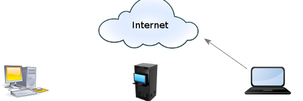 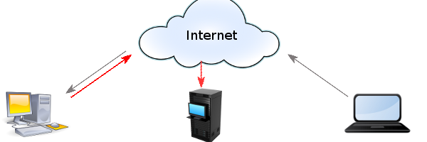 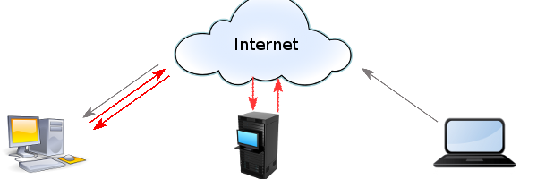 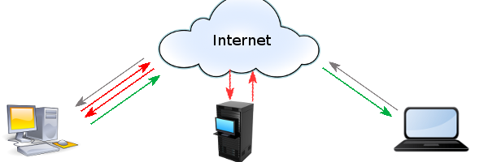
When typing in the VM name, you may call it whatever you like;
Using the name of the operating system causes the OS type and name to also fill out
Lead to Purpose
Download 1: VirtualBox
On home computer...
www.virtualbox.org
Downloads
Select Version (Windows, Mac, or Linux)
Select "Save file" and wait
Run installer as Administrator
Select okay - Install as normal
Click "Continue Anyway" -
Program is safe
The Persistent Little Warning
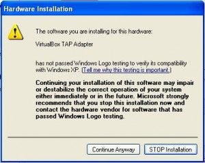
This warning will appear multiple times.
Download 2: Ubuntu
On home computer...
www.ubuntu.com/download
Download and Install
Big, orange download button
Ensure "Save file" is selected and press okay
Download 3: PuTTY
On remote computer (school or laptop)
www.putty.org
"...download PuTTY here"
First PuTTY.exe on the page
Click Save File
Using the Software
(Now with Pictures!)
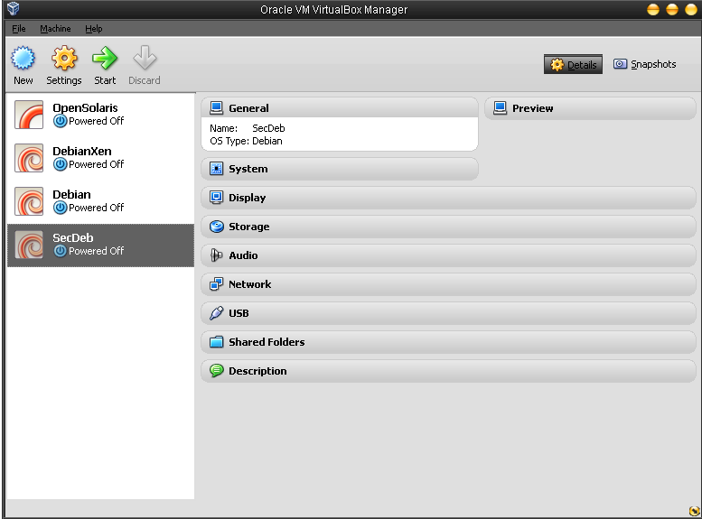 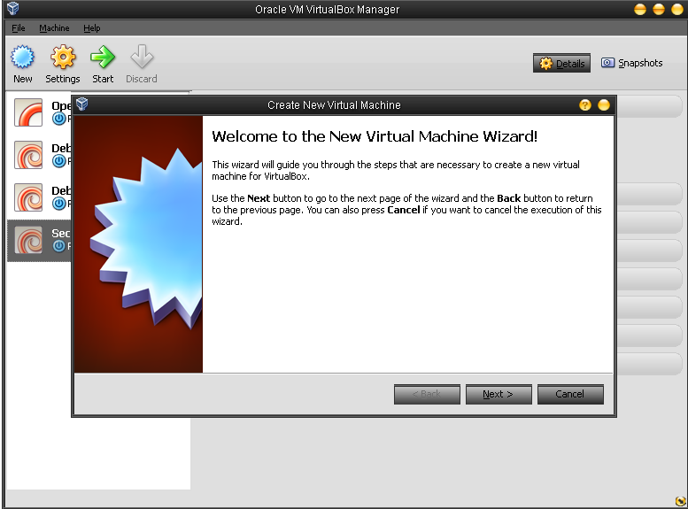 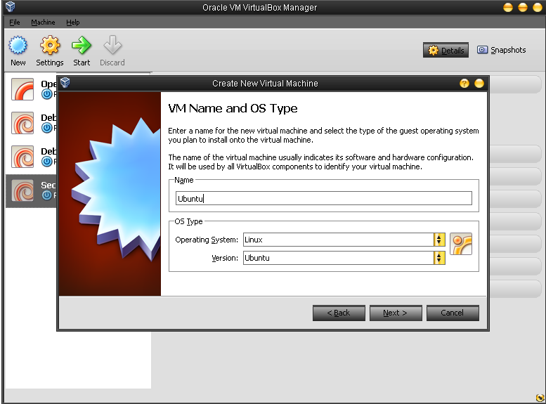 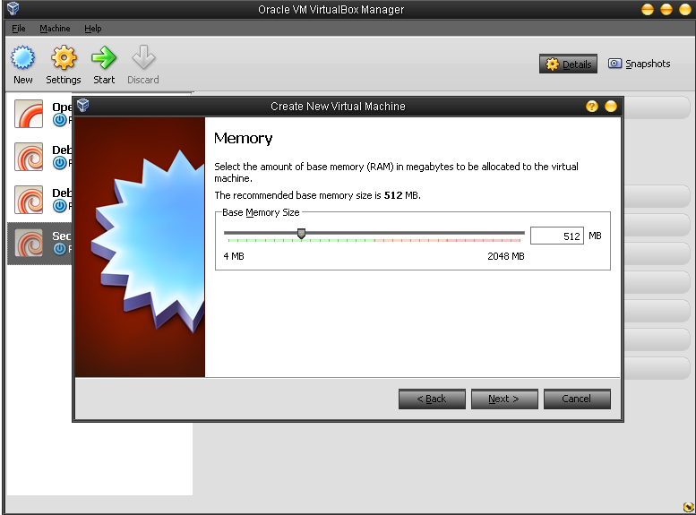 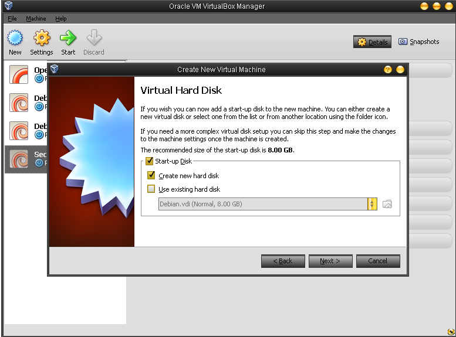 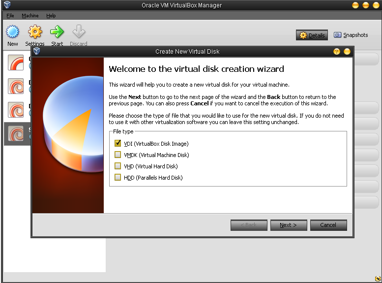 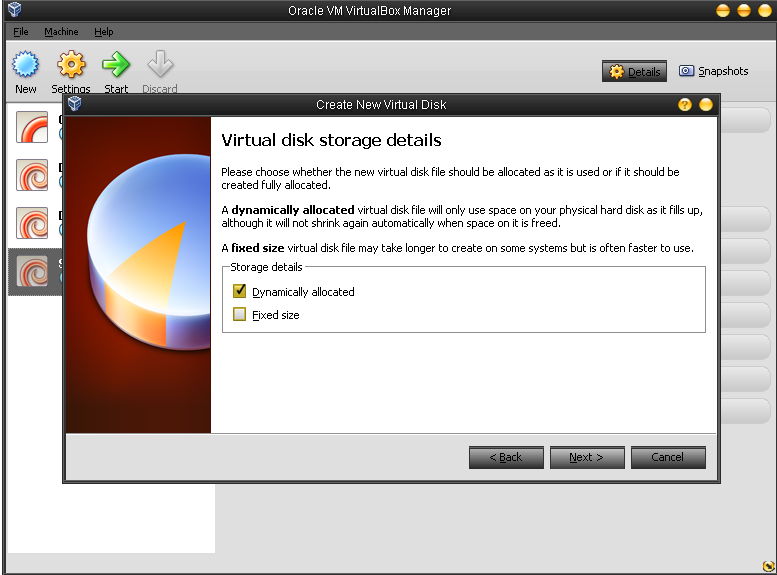 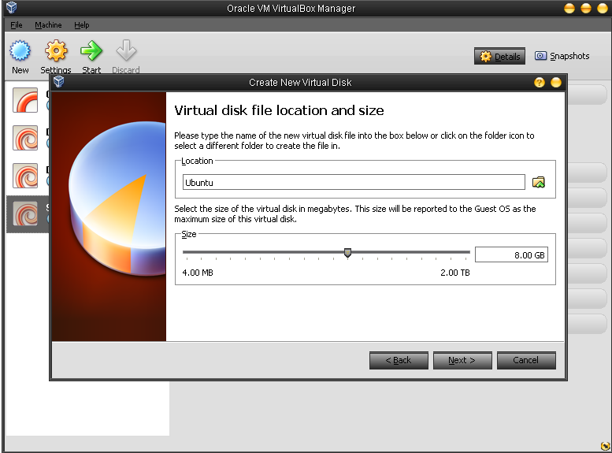 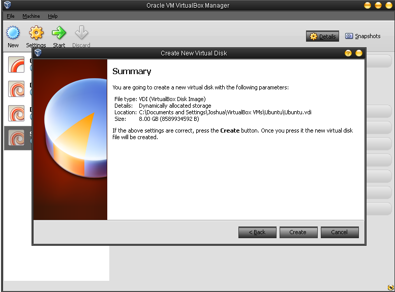 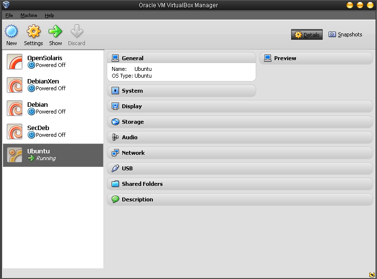 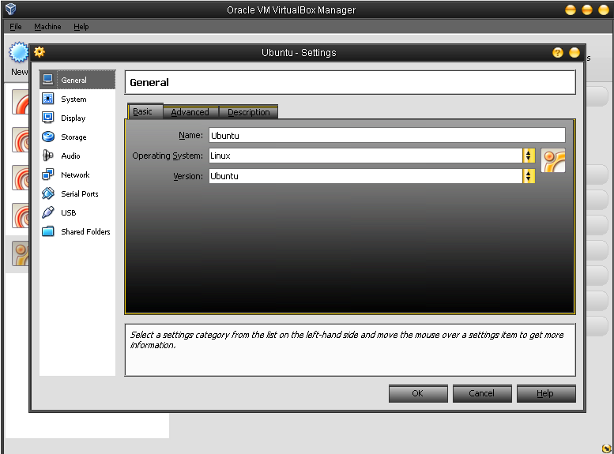 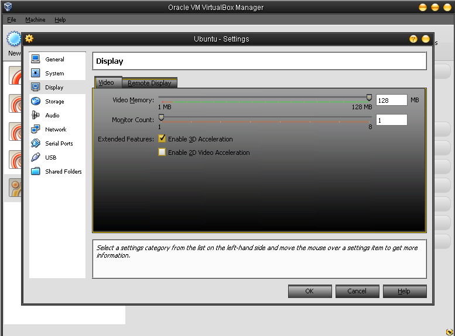 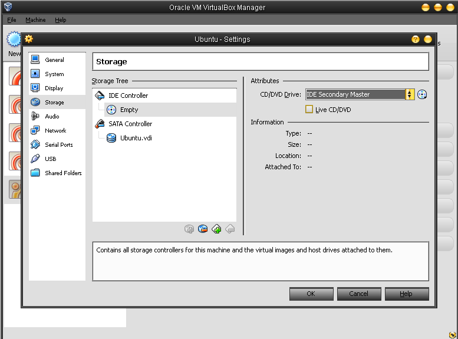 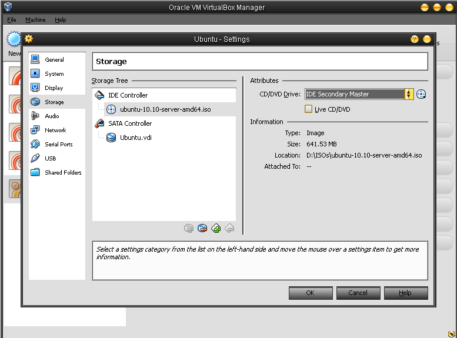 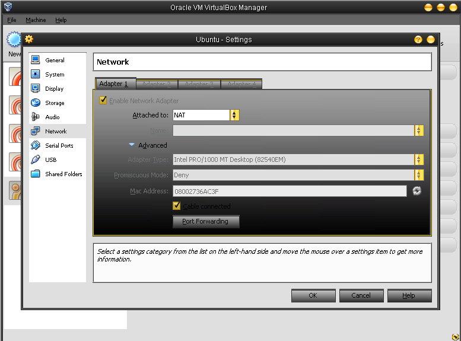 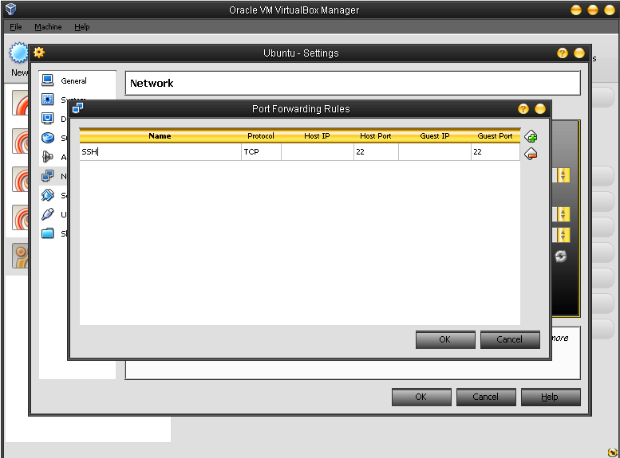
Configuring Ubuntu
Select preferred language and keyboard
Open Terminal
sudo apt-get install openssh-server
sudo passwd yourpassword
Open web browser, go to whatismyip.com
Write down IP address
Shortest, Hardest Part
Open PuTTY
Enter IP
In left window, click arrow next to SSH
Click Tunnels
Source Port: 80
Destination: Dynamic
Return to First Window
Name Connection, Save, Okay
Okay key
Questions & Answers
Questions? Comments?
Offer hands-on workshop/seminar
References
Merriam-Webster Online Dictionary (2012). Proxy Definition. Retrieved from Merriam-Webster online dictionary:
http://www.merriam-webster.com/dictionary/proxy
VirtualBox.org (2012) VirtualBox End-User License Agreement. Retrieved from
http://www.virtualbox.org/wiki/End-user_documentation
References (cont'd)
Ubuntu.com (2012) Ubuntu Project. Retrieved from
http://www.ubuntu.com/project